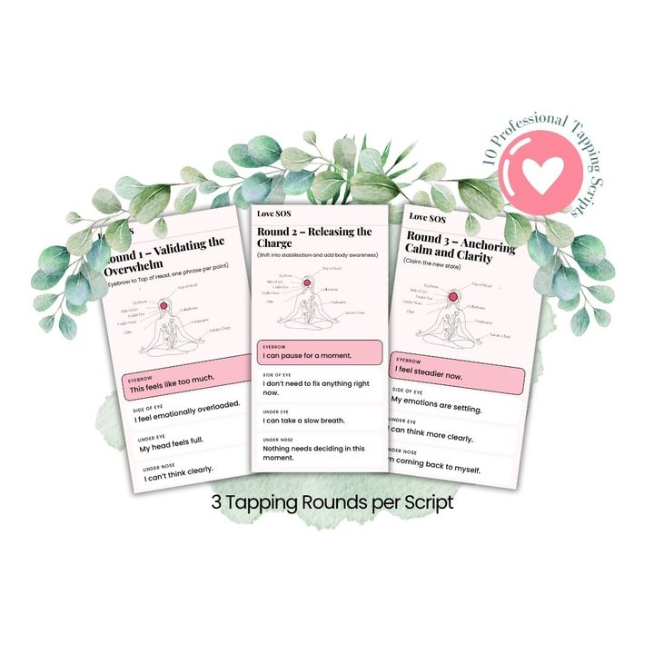
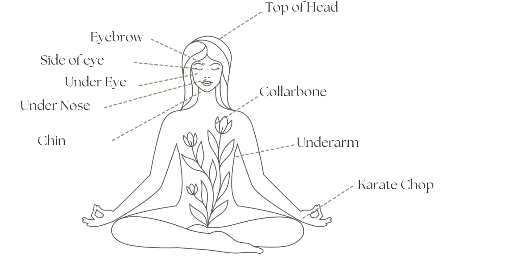
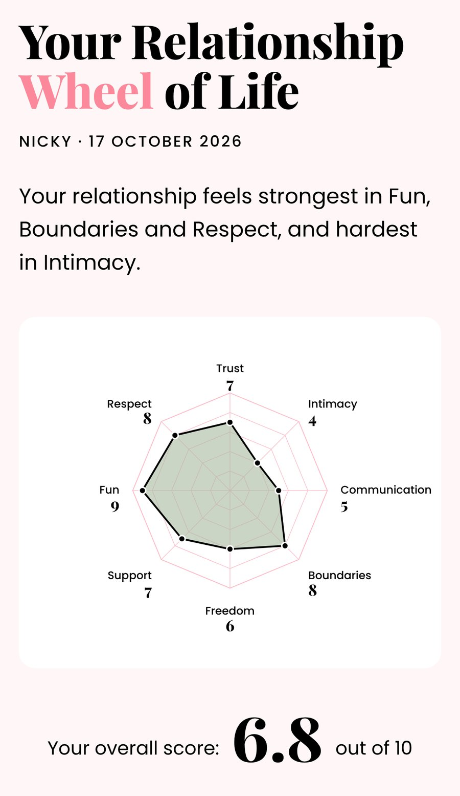

Love SOS
Calm down in minutes, before you say something you'll regret
An interactive tapping kit on your phone, with 10 scripts for real relationship moments, 3 videos and the Relationship Wheel of Life
$7 • Instant Access • Yours to Keep • Relief in Minutes
Get Love SOS for $7
Most relationship blow-ups don't happen because you don't care.
They happen because something gets triggered, feelings rush in, and suddenly you're not responding the way you meant to.
Emotions spike. Old buttons get pressed. And you find yourself reacting in ways that don't quite match who you want to be.
One minute you're fine.
The next you're triggered, hurt, resentful, overthinking, or biting your tongue to keep the peace.
And part of you is watching it happen, thinking: "Why am I reacting like this?"
That's where the Love SOS Kit comes in.
This is a practical, calming set of EFT (tapping) scripts designed for those exact moments, when relationship emotions run high and you want to steady yourself before you say or do something you might regret.
No fixing your partner.
No analysing your childhood.
No striving for "perfect communication".
Just support for you, in the moment before you lose control.
The kind of moment where you've just read a message, had a conversation, or felt that familiar knot in your chest, and you know you need a minute before responding.
Especially the moment where you know you need to hit pause, but don't quite know how, and can feel things starting to unravel.
Because you can't think straight while you're flooded with emotion.
This isn't about being dramatic or "too much". It's about having support when your emotions are louder than your intentions.
Get Love SOS for $7What's inside the Love SOS Kit
10 tapping scripts for the emotional moments that show up in real relationships
- "Why did that trigger me so much?"
- feeling rejected, dismissed, or unseen
- wanting to speak up but worrying about the fallout
- resentment quietly building in the background
- knowing you're holding things in… again
- getting stuck in blame or emotional stand-offs
- times when everything just feels negative or heavy
- wanting to soften, reconnect, or express love without overdoing it
- closing off after you've been hurt, and wanting to gently open up again
- losing sight of who you are, and wanting to feel like yourself again
Plus the Emergency Emotional Reset
For moments when it's all too much and you just need to calm your nervous system, feel steady and see clearly again.
Most people don't use all of these scripts at once. One or two usually become "go-to" supports, and the rest are there for the moments you didn't see coming.
Plus: 3 short support videos from me
How to Use
A clear introduction to tapping: where the points are, why it works, and how to get started.
Walkthrough
Watch me use one of the scripts in real time, so you can see exactly how to work through the three rounds.
Emergency Tapping
A guided tapping session for moments when you're too flooded to think and just need to calm your body NOW. Use it any time emotions feel overwhelming.
It walks you through it
Pick how you feel, rate it from 0 to 10, and follow the tapping one round at a time. At the end you'll see your number come down, so you know it's working.

Plus: a tapping points chart
A simple picture showing every point, so you never have to guess.

Plus: the Relationship Wheel of Life
Score 8 parts of your relationship in about 2 minutes. You'll see where things feel good, where they feel hardest, and which script to start with. Come back in a month and see what's shifted.

No prior EFT experience needed. No overthinking required.
Get Love SOS for $7How this actually helps
These scripts aren't about "fixing" anything.
They're for the moments you can feel yourself winding up, shutting down, or getting ready to say something you'll wish you hadn't.
They're designed to:
- calm emotional overwhelm
- reduce reactivity
- help you slow things down before you reply, react, or retreat
- help you come back to yourself
Each script has three short rounds, with a breath in between.
Use the words as written, or change them to match what you're actually feeling in the moment.
There's no right order. Start with whatever matches how you feel right now.
Often, the biggest shift is simple: you respond in a way that feels more like you, and that alone changes the tone of the moment.
Because emotional moments don't wait for quiet time. These scripts are there when you need them: in the kitchen, the bathroom, the car, right there on your phone.
A gentle, honest note
This kit won't make relationships perfect. That's not the point.
What it will do is help you settle, steady yourself, and respond from a clearer place, which tends to change a lot more than people expect.
But here's what I've learned after clearing over 56,000 emotions with clients: sometimes the same triggers keep showing up, even after you've worked on them. You calm yourself down, you tap it through, and then… it happens again.
That's not you failing. That's your body showing you there's something deeper, often an old protective wall your heart built after past hurt. It was designed to keep you safe, but now it's keeping you stuck.
When you notice this happening, that's clarity. That's your body saying "I'm ready for the deeper work."
For now, these tools are here to help you steady yourself, soften, and breathe when relationship emotions feel loud.
Created by Nicky Williams
I'm Nicky, an energy practitioner and a certified EFT Practitioner with EFT International. I've helped clients clear over 56,000 emotions, the kind that keep the same reactions and arguments coming back. I created this kit to give you a safe, gentle way to calm things down in the moment.
Still on the fence?
Here's what you're getting:
10 tapping scripts, plus the Emergency Emotional Reset, 3 short videos and the Relationship Wheel of Life.
Instant access. Open it on your phone, any time. Use it the next time relationship emotions run hot.
$7 • Instant Access • Yours to Keep
Get Love SOS for $7Commonly asked questions
How do I get it?
Straight after you buy, you'll get your link and password, on screen and by email. It opens on your phone, tablet or computer.
I've never done tapping before. Will this work for me?
Yes. The kit includes short videos where I show you exactly where to tap and how to use the scripts. No prior experience needed. You can watch once and start using it straight away. Most people find it surprisingly simple.
How long does each script take?
A few minutes. Each one is three short rounds. Once you know the points, you can do one in the time it takes to boil the kettle.
What if the same feelings keep coming back even after I use these?
That's not you failing. It usually means there's something deeper underneath, often an old hurt your heart is still protecting. The scripts help you calm the moment. Clearing what's underneath is the deeper work I do.
Will this work if I've tried everything else?
This kit isn't trying to fix everything. It's there to help you calm down in the moment, so you can respond the way you want to. Many people find that simple support makes a bigger difference than they expected.
Do I have to say the words exactly as written?
No. Use them as they are, or change them to match what you're really feeling. The tapping still works.
Is this therapy or a replacement for professional help?
No. This is a self-help tool for calming everyday emotional moments. It isn't therapy, and it isn't a replacement for medical or professional support. If you're struggling, please reach out to a professional.
What's the difference between this and just taking deep breaths?
Deep breaths help, and tapping does too. The difference is that tapping lets you name what you're feeling while you calm your body, so the feeling settles instead of just being pushed down.
What if I can't tap because I'm in public or around other people?
You can tap quietly on the side of your hand, or just on your fingertips, and say the words in your head. Or step away for a minute, even to the bathroom, and use the Emergency Emotional Reset.
Will this make my relationship perfect?
No, and that's not the point. What it will do is help you settle, steady yourself, and respond from a clearer place. That tends to change more than people expect.
Support for the moments you don't want to react, and would rather pause, steady yourself, and choose what comes next.
Get Love SOS for $7